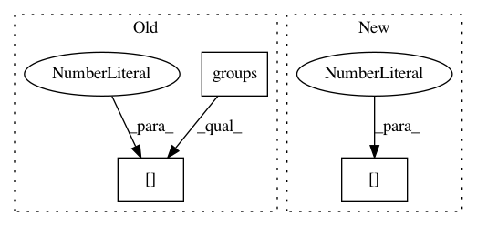

cf26ab001151638caa67ad8580f8d7f13e0490ac,tests/test_preprocessing.py,,test_class_map_feature_hasher,#,173
Before Change
"LogisticRegression.results"))) as f:
outstr = f.read()
logistic_result_score = float(
SCORE_OUTPUT_RE.search(outstr).groups()[0])
assert_almost_equal(logistic_result_score, 0.5)
After Change
outd = json.loads(f.read())
// logistic_result_score = float(
// SCORE_OUTPUT_RE.search(outstr).groups()[0])
logistic_result_score = outd[0]["score"]
assert_almost_equal(logistic_result_score, 0.5)
In pattern: SUPERPATTERN
Frequency: 3
Non-data size: 3
Instances
Project Name: EducationalTestingService/skll
Commit Name: cf26ab001151638caa67ad8580f8d7f13e0490ac
Time: 2014-11-13
Author: nmadnani@ets.org
File Name: tests/test_preprocessing.py
Class Name:
Method Name: test_class_map_feature_hasher
Project Name: home-assistant/home-assistant
Commit Name: 9c636ab6fd3eded438e65519a6e118dffc58a701
Time: 2016-08-13
Author: tomi.tuhkanen@iki.fi
File Name: homeassistant/components/media_player/braviatv.py
Class Name:
Method Name: _get_mac_address
Project Name: EducationalTestingService/skll
Commit Name: cf26ab001151638caa67ad8580f8d7f13e0490ac
Time: 2014-11-13
Author: nmadnani@ets.org
File Name: tests/test_preprocessing.py
Class Name:
Method Name: test_class_map